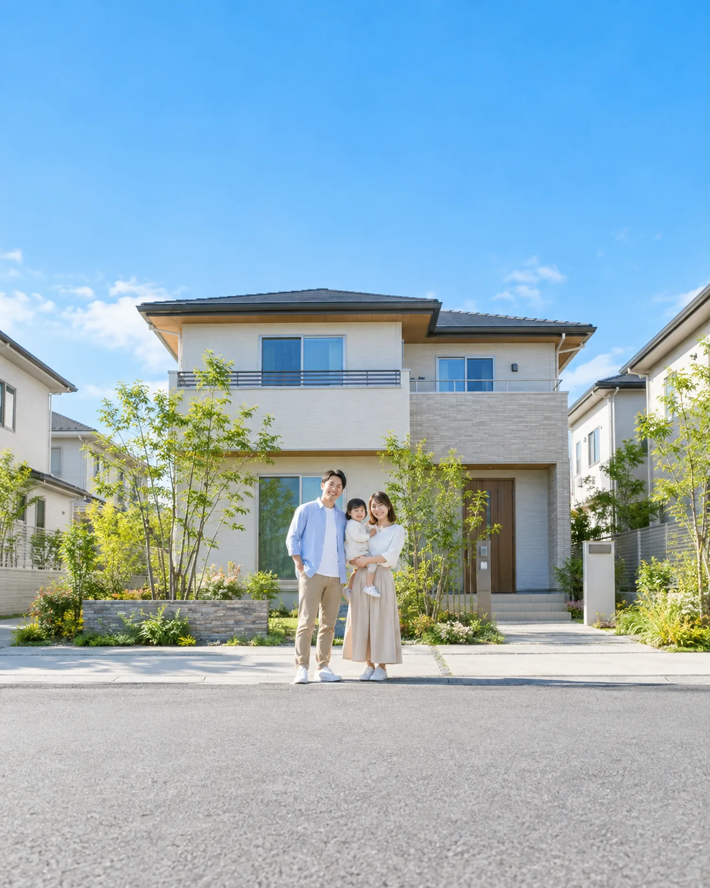
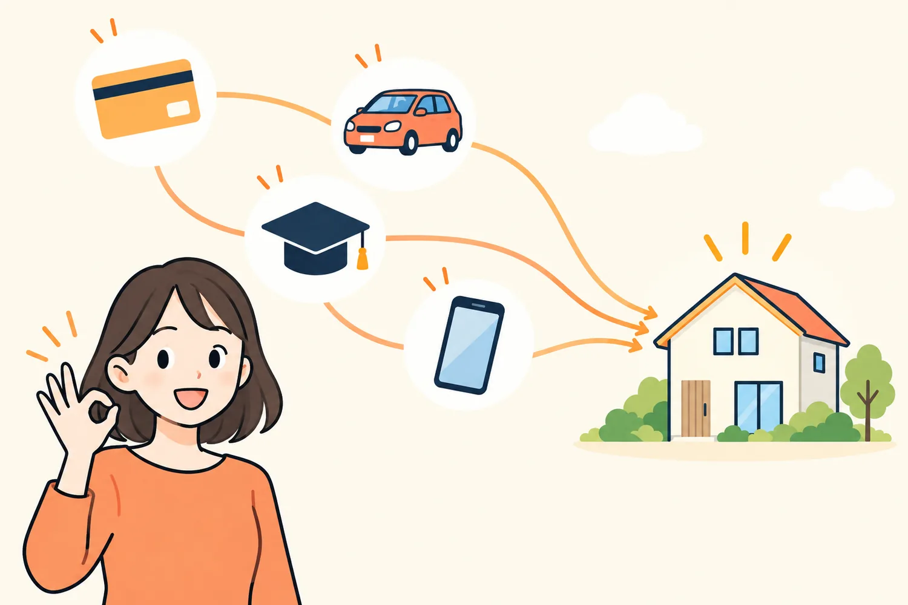
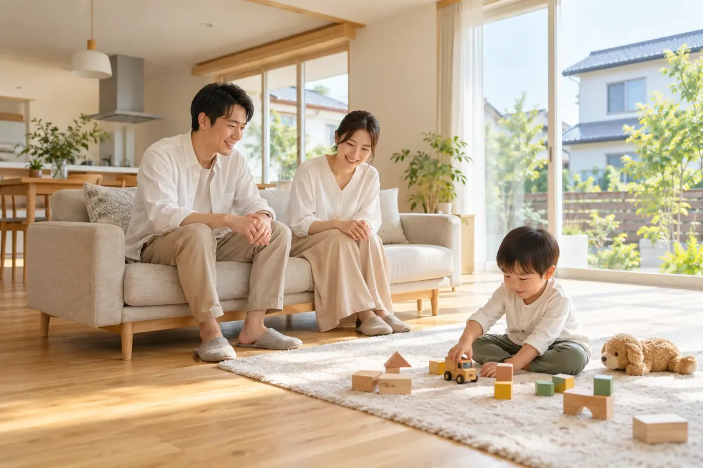
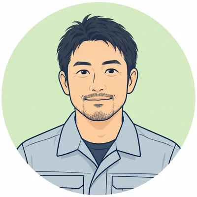
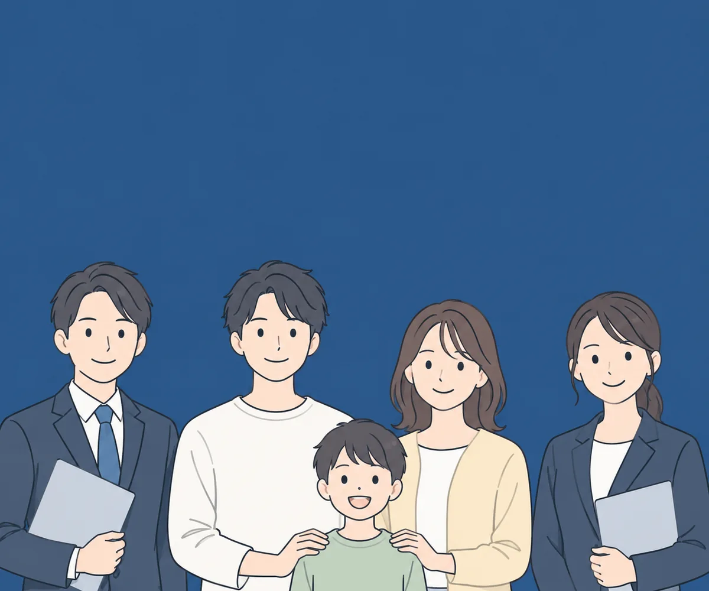
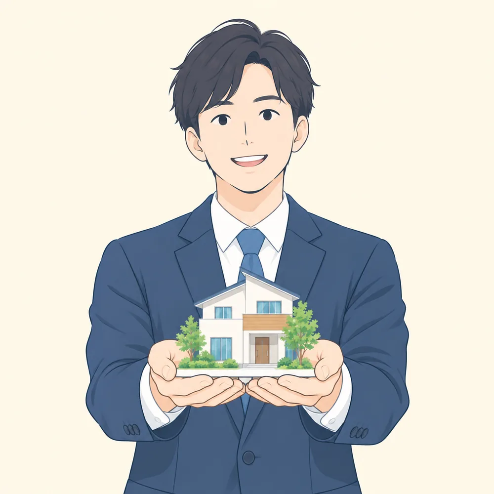
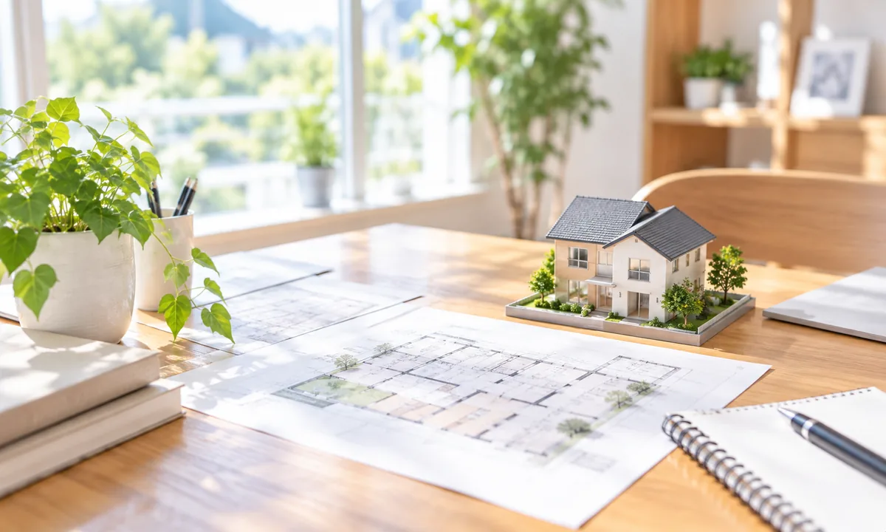
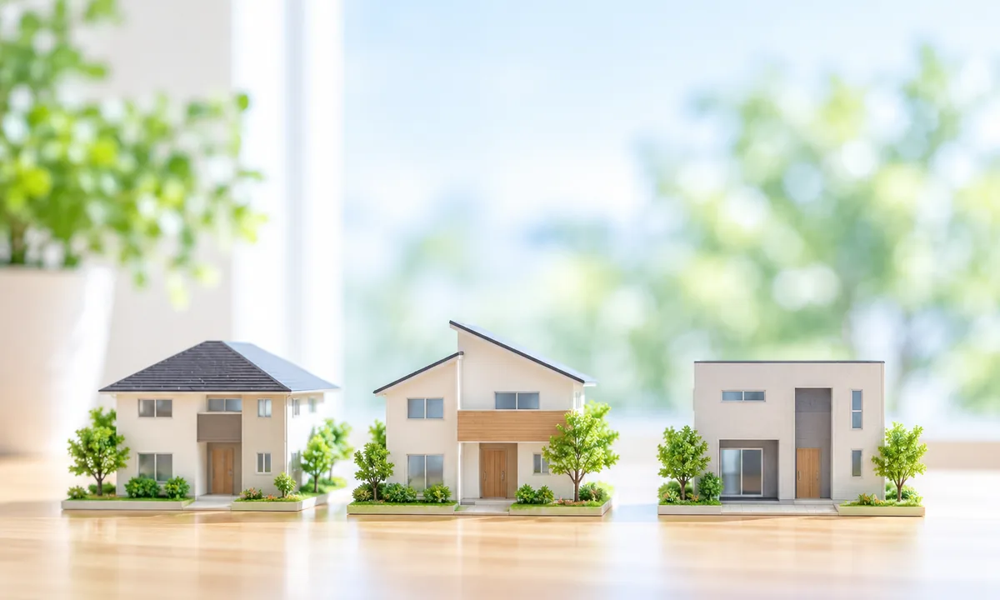
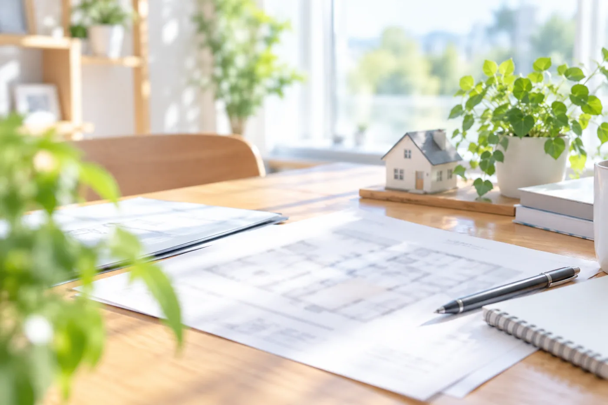

住まい計画の相談窓口
夢のオーダーメイドのマイホームを現実の住まいの計画に。
- お支払いの整理
- 資金の準備
- 住まいの取得
返済の見直し×資金の準備×住まいの取得
を住宅ローンを活用して
ひとつの計画に。
こんなことで困っていませんか？
「借入があるから家は無理」と
言われたことはありませんか。
- カードローンや車のローンの返済が続いていて、家のことは後回しになっている
- 家賃と返済の両方を払っていて、貯金がなかなか増えない
- 以前、金融機関や不動産会社でお断りされて、それきり動けていない
- 何から整理すればいいのか分からず、誰に相談すればいいのかも分からない
- 家族に知られずに、まず自分だけで状況を整理したい
まずはLINEで、
いまの状況をお聞かせください。
住宅ローンを活用してできること
別々になっているお支払いを、
住まいの計画と一緒に考える。

- 01
家計全体を見直せる可能性
別々になっている複数のお支払いを整理することで、家計全体を見直せる可能性があります。どこまで整理できるかは、お客様ごとの状況によります。
- 02
収入だけで判断しない取得計画
現在の収入だけでなく、将来の見通しや物件の価値も含めて、住まいの取得計画を検討できる場合があります。
- 03
資金状況に合わせたプラン設計
頭金・希望する借入額・返済期間など、個々の資金状況に合わせて、宅地建物取引業者が取得プランを設計します。
- 返済期間が長くなる分、利息を含めた総支払額が現状より増える可能性があります。
- 対象となるお借入れの種類・上限額は金融機関ごとに異なります。対象外となるお借入れもあります。
- 現在返済が遅れているお借入れがある場合など、ご利用いただけないケースがあります。
ご相談のあとに変わること
「払い続けるだけ」から、
見通しのある毎月へ。

ばらばらだったお支払いの全体像が見え、毎月の計画が立てやすくなります。
「無理」と思っていた住まいの取得について、いま検討できる選択肢と難しい点が分かります。
進める場合も、今は待つ場合も、何をすればよいかがはっきりします。
ご利用の可否や条件は、お客様ごとの状況および金融機関の判断によります。結果を保証するものではありません。
こんな方のための窓口です
ひとつでも当てはまれば、
ご相談の対象です。
- 01賃貸にお住まいで、お借入れの返済を続けている
- 02カードローン・車のローン・奨学金・分割払いがある
- 03転職したばかり、勤続年数が短い、個人事業主
- 04頭金が少ない、または貯金がほとんど無い
- 05以前、金融機関や不動産会社でお断りされたことがある
- 0640代以降、ひとり親、単身で住まいを考えている
運営者のご紹介
restartlife 運営者
本間 謙太郎
はじめまして。restartlife の運営者、本間謙太郎です。
私自身、26歳のときに、お借入れの返済に行き詰まり、支払いを整理した経験があります。当時は、将来マイホームを持ちたいという思いがありながらも、その記録が残っている間は住宅ローンを組むことが難しく、「自分は家を持てるのだろうか」と悩んだ時期がありました。
そこから時間をかけて、再び住宅ローンを検討できる状態になるまでを実際に経験し、住宅を持つという目標に向けて、一つひとつ状況を整理してきました。
だからこそ、過去のお借入れや、その記録に不安がある方が感じる「何から始めればいいのか分からない」「今の自分でも住宅を持てる可能性はあるのか」という気持ちが、私にはよく分かります。
大切なのは、過去だけを見て諦めるのではなく、まず今の状況を正しく知り、これから何をすればいいのかを整理することだと考えています。
私自身の経験を活かしながら、一人ひとりの現在の状況に向き合い、住宅という目標に向かって少しでも遠回りを減らせるよう、お手伝いしていきたい。そんな思いから、このサービスを始めました。
この窓口では、私がLINEでご相談を受け付け、いまのお支払いの状況と住まいの希望をお伺いします。そのうえで、資金計画と住まいのご案内は、宅地建物取引業の免許を受けた事業者が担当します。
ご相談の想定例
こんなご相談から、
話は始まります。
実際のご相談ではなく、よくあるご状況を想定した例です。
ご相談内容：家賃と2本の返済で毎月が精一杯。家を買うのは無理だと思っていたが、まとめて考えられると聞いて相談。
窓口での整理：毎月のお支払いを書き出し、返済負担率の考え方をご説明。いま検討できる選択肢と、先に整えたほうがよい点をお伝え。
その後：宅地建物取引業者へお取次ぎし、資金計画の相談へ。

ご相談内容：数年前にお断りされて以来、住まいの話は避けてきた。状況が変わったので、もう一度可能性を知りたい。
窓口での整理：当時と現在の違いを整理。いま金融機関に確認される点と、準備しておきたい書類をご案内。
その後：資金計画の段階で、進めるかどうかをご本人が判断。
restartlife の特徴
相談しやすさを、モットーに
ご対応させていただきます。

LINEだけで始められる
友だち追加してメッセージを送るだけ。電話や来店は不要で、ご自身のペースで進められます。
借入がある前提の窓口
お借入れがあること自体で相談をお断りすることはありません。その前提で、検討できる範囲をご案内します。

宅地建物取引業者と連携
資金計画から物件のご案内、売買のお手続きまで、免許を受けた事業者が担当します。

相談は無料・無理に勧めない
ご相談から売買契約の締結まで、相談料・代行手数料などの費用をご請求することはありません。

サービスの流れ
具体的に、何をするのか。
- STEP 1
LINE で友だち追加
ボタンを押して友だち追加するだけで始められます。相談だけでもかまいません。
- STEP 2
いまの状況をお伺い
お借入れの内容、収入、住まいの希望をお伺いします。ご家族や勤務先への連絡は行いません。
- STEP 3
ご案内できる範囲のお伝え
状況に応じて、検討できる選択肢と、難しい点を率直にお伝えします。
- STEP 4
資金計画と住まいの検討
宅地建物取引業者がご案内します。金融機関へのお申込みや物件の検討はこの段階で進めます。
当窓口は、金融商品の販売・貸付・仲介、債権者との交渉は行いません。住宅ローンのお申込みに対する判断は金融機関が行います。
無料でできること
ご相談の前後で、
お渡しできるもの。
- 状況の整理
毎月のお支払いと住まいの希望を、LINEのやり取りの中で一緒に書き出します。
- 選択肢のご案内
いま検討できることと、時間を置いたほうがよいことを分けてお伝えします。
- 準備リスト
資金計画の相談に進む場合に、そろえておきたい書類と確認事項をご案内します。
- 基礎知識のコラム
借入がある方向けの住宅ローンの考え方を、コラムで公開しています。
費用について
相談料無料
ご相談から売買契約の締結まで費用のご請求なし
売買契約以降に必要となる諸費用（金融機関の事務手数料・登記費用など）は、住宅ローンの資金計画の中で事前にご案内します。
よくあるご質問
相談の前の、不安と疑問に。
カードローンや車のローンがあっても相談できますか。
はい。お借入れがあること自体で相談をお断りすることはありません。お借入れの内容と毎月の返済額を整理したうえで、検討できる範囲をご案内します。
家族に知られずに相談できますか。
LINE でのご相談は、ご本人とのやり取りだけで進めます。ご家族や勤務先への連絡は行いません。
相談したら、必ず物件を買わなければいけませんか。
いいえ。ご相談の結果、いまは進めないという判断になることもあります。無理におすすめすることはありません。
頭金がなくても相談できますか。
ご相談いただけます。頭金がない場合でも、物件の価格・諸費用・毎月のご返済の見通しをあわせて検討できる場合があります。ただし借入額が増える分、毎月のご返済や総支払額は大きくなる可能性があります。
まとめて検討すると、支払いは必ず減りますか。
必ず減るとは限りません。毎月の返済額が下がる可能性がある一方で、返済期間が長くなる分、利息を含めた総支払額は増える可能性があります。両方をご確認いただいたうえで判断していただきます。
対応エリアはどこですか。
ご相談は全国から LINE でお受けしています。物件のご案内や手続きの対応範囲は、エリアによって異なる場合があります。
受付について
ご相談は、一件ずつ
順番にお受けしています。
運営者が一人で受付とお聞き取りを行っているため、同時にお受けできるご相談の数には限りがあります。ご相談が重なった場合は、お受けした順にご返信します。お待たせすることがありますが、その分、一件ずつ状況を確認してお返事します。
お支払いについて
お支払いは、発生しません。
相談は無料のため、当窓口へのお支払い方法はありません。住宅の取得にかかる費用は、住宅ローンの資金計画の中で、宅地建物取引業者が金額と時期を事前にご案内します。
この窓口を始めた理由
過去ではなく、
これからを一緒に考える。
住まいの相談は、本来なら「どんな家に住みたいか」から始まるものです。けれど、お借入れがあると、その前の段階で「自分には関係ない」と入口を閉じてしまう方が少なくありません。私自身が、かつてそうでした。
実際には、状況を整理してみると、いま検討できることと、先に整えるべきことが分かれて見えてきます。すぐに進める方もいれば、今は待つと決める方もいます。どちらも、整理したからこそ選べる道です。
「いつか家を持ちたい」という思いがあるなら、まずは今の状況を整理するところから始めてみてください。売り込みはしません。いまの状況を一緒に書き出すところから、始めさせてください。
restartlife 運営者 本間 謙太郎

本ページは一般的な情報提供と、ご相談の前に状況を整理していただくことを目的としています。ご利用の可否や条件は、お客様ごとの状況および金融機関の判断によります。ご相談の結果を保証するものではありません。